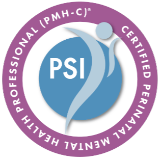

Perinatal Mental Health
The perinatal period can be beautiful and impossibly hard at the same time. You deserve support that truly understands both.
What Is Perinatal Mental Health?
The perinatal period spans from conception through the first year postpartum — a time of profound physical, emotional, and relational change. Perinatal mental health refers to the emotional and psychological wellbeing of individuals during this season and its many complexities.
Up to 1 in 5 individuals experience a perinatal mood or anxiety disorder (PMAD) — making it one of the most common complications of pregnancy and childbirth. Yet these conditions are frequently underdiagnosed, minimized, or met with platitudes like "enjoy every moment."
Perinatal mental health concerns are not a sign that you are failing. They are real, treatable conditions — and you deserve skilled, compassionate support.
You are not alone. Postpartum depression, anxiety, OCD, PTSD, and psychosis are medical conditions, not personal failures. With the right support, recovery is not only possible — it is expected.
Who I Support
I work with individuals navigating all aspects of the perinatal experience, including:
- Postpartum depression, anxiety, and rage
- Perinatal obsessive-compulsive disorder (OCD)
- Birth trauma and postpartum PTSD
- Pregnancy loss — miscarriage, stillbirth, TFMR
- Infertility, IVF, and fertility treatment grief
- Complicated feelings about pregnancy or parenthood
- Matrescence — the identity transformation of becoming a mother
- Partner support for those with a loved one experiencing a PMAD
- Anxiety and depression during pregnancy (prenatal)
Why Specialized Care Matters
Perinatal mental health is not the same as general anxiety or depression — though it can look like it on the surface. The hormonal shifts, sleep deprivation, identity upheaval, and relational changes that accompany this season require a clinician who understands the full picture.

Perinatal Mental Health Certified (PMH-C)
I hold a Perinatal Mental Health Certification (PMH-C) through Postpartum Support International — specialized training that goes beyond a general counseling license to ensure I am prepared to support you with clinical excellence and genuine understanding.
What Therapy Looks Like
Sessions are shaped around where you are right now. In the early stages, we focus on stabilization — managing symptoms, building coping tools, and making sure you are safe. As you stabilize, we may explore the deeper layers: the identity shifts, the grief, the birth experience, the relationship changes.
I draw on EMDR for processing birth trauma and pregnancy loss, as well as attachment-based and somatic approaches for nervous system regulation and bonding support.
I know that getting out of the house with a newborn — or during pregnancy — can feel impossible. I offer secure telehealth sessions throughout Michigan so you can access care from wherever you are.
A Note to Partners and Family
If someone you love is struggling postpartum or after a loss, it can be frightening and disorienting — especially if they seem like a different person. You are not alone either. Reach out to learn how I can support your family as a whole.
You Do Not Have to Feel This Way Forever
Perinatal mood and anxiety disorders are treatable. Help is here.
Experiencing thoughts of harming yourself or your baby? Please call or text Call or text the 988 Suicide & Crisis Lifeline or call the Postpartum Support International helpline at 1-800-944-4773.